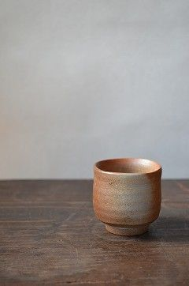

otonarisan
備前焼/Bizenware
This is the oldest pottery among the ``Japan's Six Ancient Kilns.''
The Imbe area of Bizen City is a typical production area, and it is characterized by firing at high temperatures without using glaze or painting.




歴史/History
The manufacturing method of Sue ware from the Kofun period gradually changed, and during the Heian period, the Nandai kiln site produced household utensils such as bowls, plates, plates, and tiles at the foot of Mt. Kumayama.
It is said to be the beginning.
During the Kamakura period, many pots, jars, and mortars were made, but from around this time, items with the reddish-brown surface characteristic of today's Bizen ware began to be fired.